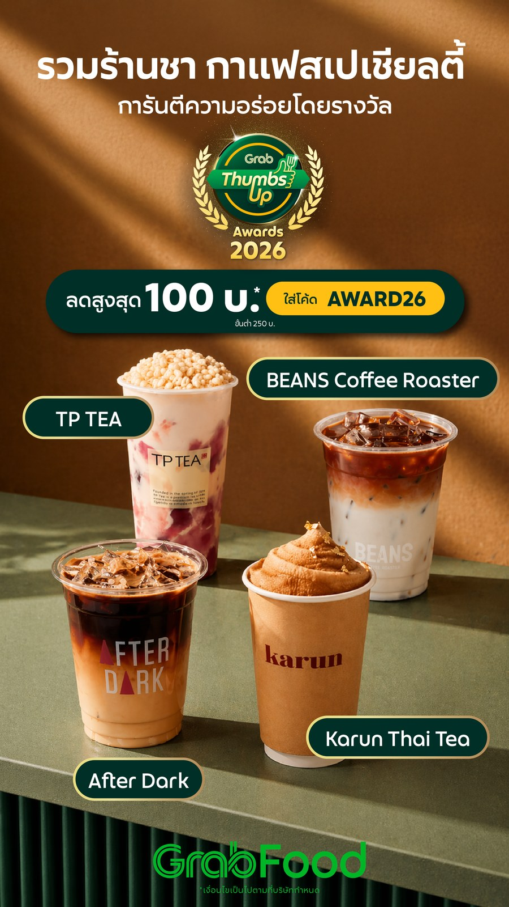
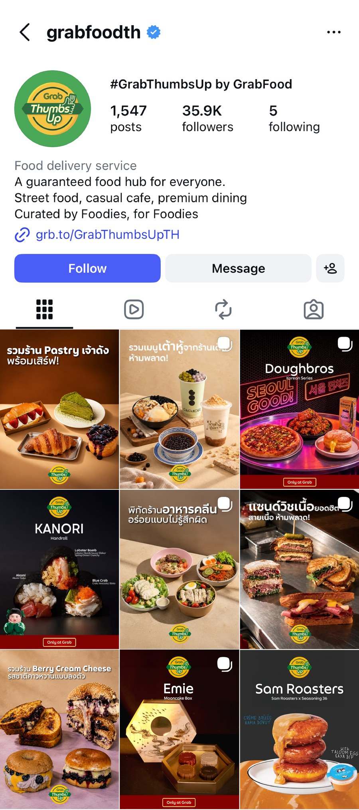
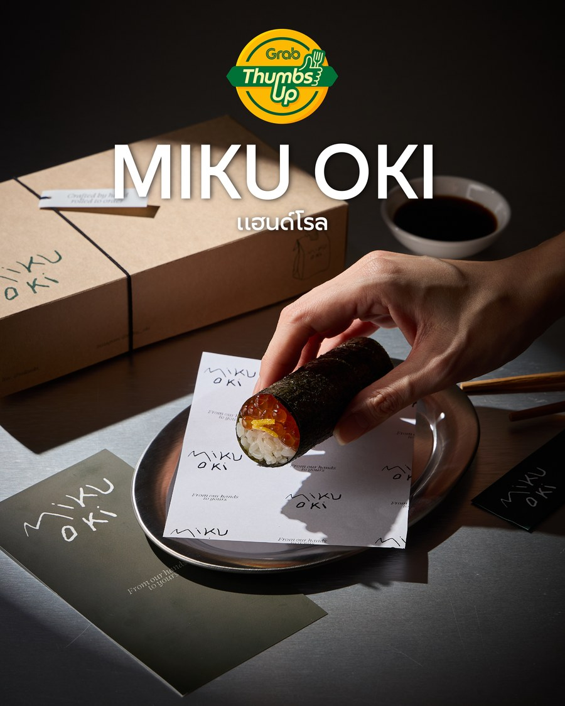
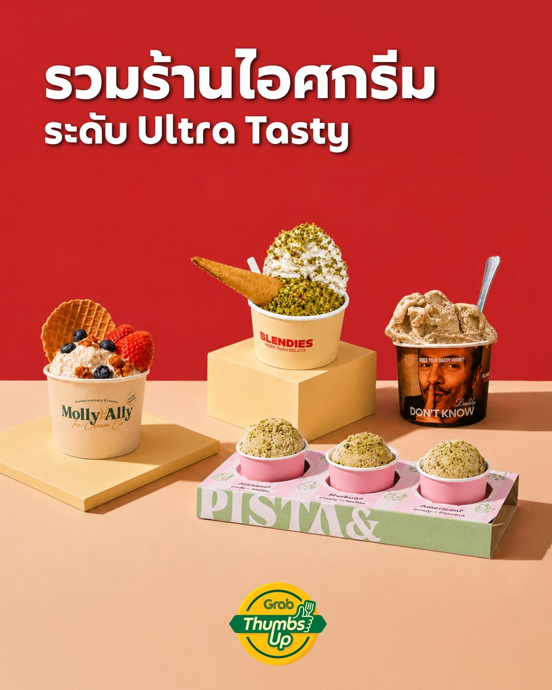
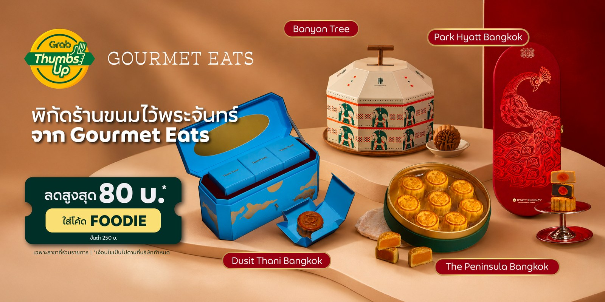

N° 01
GrabFood — Social Campaigns
Social Media Design — Grab Marketing — Content Direction
Social Media / Grab
A series of in-app and social campaign banners for GrabFood — an awards promotion for tea and coffee shops, a Miku Oki roll campaign, a citywide "Ultra Tasty" ice cream round-up, a short "Holiday Pastry" motion piece, and the Gourmet Eats key visual — each built to GrabFood's Thumbs Up campaign system.




Fig. 11 — Campaign banner and motion seriesGrabFood

Fig. 11a — Gourmet Eats key visualGrabFood